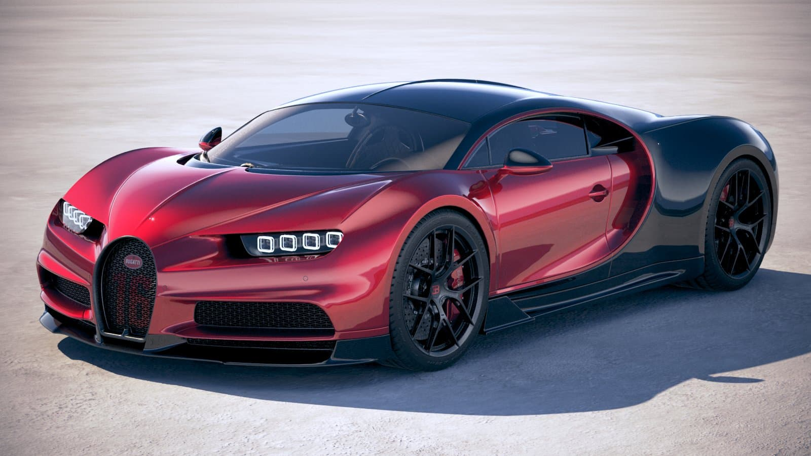

Pizza is my favorite food. Just a slice can fill my belly and make my day. i often choose to eat Pizza over other foods.
Beef Curry
I eat rice often with my family and when I do, Beef Curry is my favorite dish.
Doritos Chips
When it comes to junk food, I'm addicted to the taste of doritos. I buy a lot of doritos when I go to stores.
Extra Gums
I chew a variety of these Extra Gums. They keep me from feeling hungry and focused when I'm working.
Favorite Cars

Bugatti Chiron
I'm not a fan of the Veyron, but I absolutely love the Chiron. I'm attracted to its sharp like headlights.
Land Rover
Land Rovers are classic status vehicles, but also futuristic and comfortable. I really desire to have one of these one day.
Pagani Huayra Zonda
This car is a rare car with an exclusive premium design. Even for a supercar, it's too well designed. It's not the fastest in real-life, but it's the fastest car in many games.
Lykan HyperSport
This model of car was used in Fast and Furious which made it so popular. I'm also in love with it because of its popular aggressive design.
Favorite Pets
Cats
Cats dont' reqire too much attnetion whic makes it easier to hanle a cat. They're also small, so they easily fit in any home.
Parrot
Parrots are beautiful and cute. For being burds, they're not scary. And many parrots can talk like humans which make them enjoyable to play with.
Gold Fish
Gold Fishes are a common type of pet fish. They are colorful but easy to find and buy. Their colorful skin distracts me from stress.
Hamster
Hamsters are easy to take care and they are really fun to have in your room. They're fun to play with and they can keep you busy.